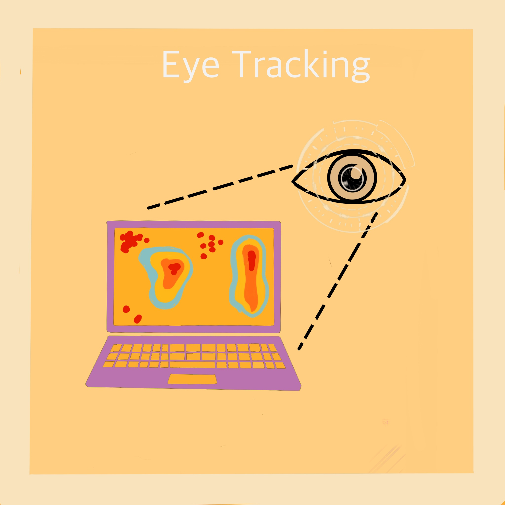

×

Eye tracking investigates the effect of web design on immediate visual focus.
The goal of this project is for UI/UX students to evaluate different user interface designs and interpret the results of qualitative user tests. In this eye tracking project, a group of three students and I, created two different web design concepts for a fictional bakery. One was vibrant and colorful while the other was calmer and relaxed. We hypothesized that users who view both versions would spend more time viewing the images of the vibrant design and more time reading the words of the more relaxed design. This hypothesis was then tested using eye tracking technology and our results were analyzed. The purpose of this project was for us to gain experience creating alternative web designs, perform a common A vs B design experiment, and learn to interpret the results of the experiment.
Below I've summarized my four step project process. Click through the slides to learn more!
Overall, this project provided a great introduction to A/B testing: the process where two versions are presented to users to examine user preference. We enjoyed the creativity involved in developing themed bakery Figma pages and the opporunity to interact with new technology. Although this experiment yielded no significant results, we were very pleased with the experience.